Donc cet agent RAG m'a pris moins de cinq minutes à configurer. C'est la méthode la plus simple que j'aie jamais essayée. Je vais ouvrir ce chat et coller ce message, qui contient trois requêtes différentes. La première est : quel a été le chiffre d'affaires total de Tesla au deuxième trimestre 2025 ? La deuxième est : quel a été le chiffre d'affaires total de NVIDIA au premier trimestre de l'exercice fiscal 25 ? Et la troisième est : quels ont été les chiffres d'affaires de Nike pour le quatrième trimestre de l'exercice fiscal 2025 ? Vous pouvez voir que l'agent a sollicité son outil Pinecone à trois reprises. Et si nous regardons ses réponses, non seulement il nous donne les bonnes réponses, mais il nous fournit le document exact, les numéros de page et la citation exacte qu'il a trouvée dans le PDF. Et c'est ainsi que nous pouvons avoir confiance dans le fait que les réponses sont
Interface & Outils : Interface web de workflow d'automatisation et de chatbot (type n8n ou plateforme similaire).
Contenu textuel & Code : "What was Tesla's total revenue in Q2 2025? What was NVIDIA's total revenue for Q1 FY25? What were Nike's revenues for Q4 FY25?" ainsi que les réponses structurées avec sources.
Action / Démonstration : Exécution d'un workflow RAG qui interroge un modèle OpenRouter et Pinecone pour répondre à une requête multi-entreprises.
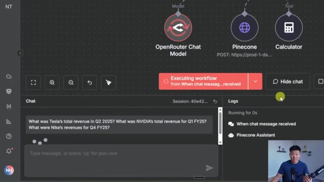
🔍 Agrandir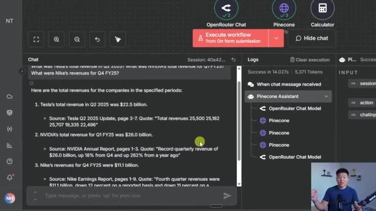
🔍 Agrandirexact. Donc pour commencer avec Tesla, si je prends la citation exacte qu'il a trouvée dans le PDF, et que je vais dans le document Tesla, et que nous faisons une recherche rapide, nous pouvons voir qu'il l'a tirée de la page quatre. Et auparavant dans NNN, notre assistant a dit qu'il l'avait trouvée de la page trois à sept sur ce document exact. Ensuite, si nous allons à la réponse de Nvidia, et que nous prenons la citation exacte, et ensuite je fais un Ctrl+F pour celle-ci dans ce document, vous pouvez voir qu'il la trouve juste ici. Et c'est la page un du PDF. Et nous retournons dans NNN et il dit qu'il l'a trouvée sur la page un du document du rapport annuel de Nvidia. Et puis enfin, si nous allons à la réponse de Nike et que nous prenons cette citation qu'il a trouvée, passons au Nike
Interface & Outils : Visionneuse de PDF et interface de workflow d'assistant IA (Pinecone).
Contenu textuel & Code : Document financier de Tesla (chiffres d'affaires Q2 2024 - Q2 2025) et interface de chat avec des sources et des citations textuelles.
Action / Démonstration : Navigation dans le document PDF pour retrouver la citation exacte et affichage des résultats dans l'assistant IA.
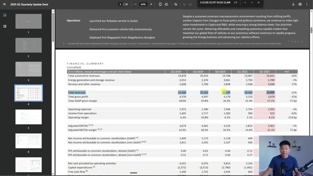
🔍 Agrandir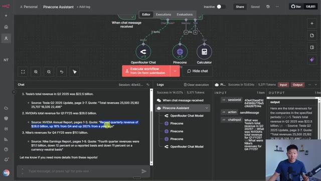
🔍 Agrandirdocument et faire un autre Ctrl+F, nous pouvons voir que la citation exacte a été trouvée juste ici à la page un. Et dans NNN, l'assistant a dit qu'il l'avait trouvée à la page un. Donc ceux d'entre vous qui ont déjà créé des agents RAG, vous savez que ce n'est pas super facile de faire en sorte que votre agent cite exactement d'où il tire tout. C'est faisable, mais vous devez configurer un pipeline pour faire des choses comme le balisage de métadonnées. Et comme je l'ai dit, tout ce que j'ai fait ici, c'est déposer un fichier et ensuite chatter avec.
Interface & Outils : Interface web de workflow / chatbot (type n8n ou plateforme d'agent IA personnalisée) avec un panneau de discussion intégré et une vue des logs d'exécution.
Contenu textuel & Code : Réponse textuelle détaillée d'un assistant IA listant les revenus de Tesla, NVIDIA et Nike accompagnés de citations textuelles exactes et numéros de pages extraits des rapports de référence.
Action / Démonstration : Exécution d'un workflow d'agent IA effectuant une recherche RAG et affichant les résultats structurés dans le chat et les logs de sortie.
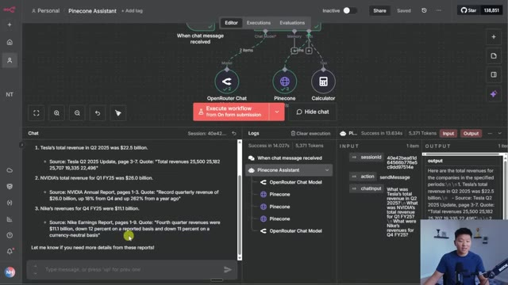
🔍 AgrandirC'est donc exactement ce que je vais vous montrer comment nous faisons cela aujourd'hui. D'accord, maintenant que vous avez vu cette rapide démo, je vais simplement, en gros, construire ce système exact devant vous, étape par étape. Donc, n'hésitez pas à ouvrir votre ordinateur et à suivre ce que je fais. Mais aussi, le modèle entier que vous verrez aujourd'hui sera disponible au téléchargement gratuitement. Tout ce que vous avez à faire, c'est de rejoindre ma communauté FreeSchool. De cette façon, vous pourrez simplement l'installer et l'essayer par vous-même. Donc, ce que nous faisons aujourd'hui, c'est que nous utilisons un assistant Pinecone comme recherche RAG.
Interface & Outils : Interface web de type constructeur de workflow (Pinecone Assistant Template)
Contenu textuel & Code : Espace de travail vide avec une grille de points et l'élément central 'Add first step'
Action / Démonstration : Le présentateur s'apprête à ajouter la première étape du système automatisé
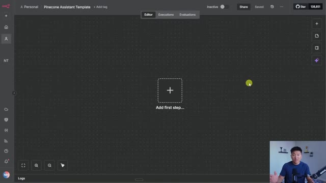
🔍 AgrandirDonc, si vous n'avez jamais utilisé Pinecone auparavant, c'est une base de données vectorielle. Mais ici, vous pouvez voir que nous avons une section juste ici appelée "assistant". Donc si je clique dessus, vous pouvez voir que j'ai un assistant de test, qui est celui que nous venions d'utiliser. Mais ce que je vais faire aujourd'hui rapidement, c'est en créer un nouveau devant vous les gars. Je vais juste appeler celui-ci "demo" et je vais créer l'assistant. Maintenant, rapidement, ce auquel vous voulez faire attention, c'est ici en bas : il est écrit que les assistants actifs ont des frais de cinq cents par heure.
Interface & Outils : Interface web Pinecone
Contenu textuel & Code : Documentation et options de configuration de la base de données vectorielle Pinecone, sections "Get started", "Assistant", et formulaire de création d'assistant.
Action / Démonstration : Navigation dans le tableau de bord Pinecone pour accéder et configurer un assistant IA.
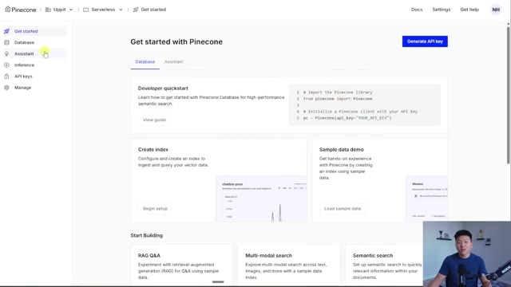
🔍 Agrandir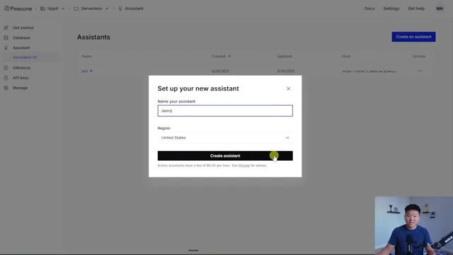
🔍 AgrandirDonc ce n'est pas trop mal. Et vous pouvez aussi cliquer juste ici pour plus de détails sur les tarifs. Maintenant que c'est fait, je vais procéder à la création de cet assistant. Et ce que vous pouvez voir, c'est que cela ressemble un peu à une interface de GPT personnalisé. Nous avons un chat juste ici et ensuite vous avez la possibilité d'y glisser des fichiers. Donc ce que je vais faire, c'est glisser ces trois fichiers que nous regardions tout à l'heure, les rapports de résultats de Tesla, Nike et NVIDIA.
Interface & Outils : Interface web de Pinecone (Assistant playground).
Contenu textuel & Code : Nom de l'assistant "demo", sélection de la région "United States", et interface de chat avec zone de téléchargement de fichiers (PDF, DOCX, TXT, JSON, MD).
Action / Démonstration : Création d'un nouvel assistant et affichage de l'interface de test (playground).
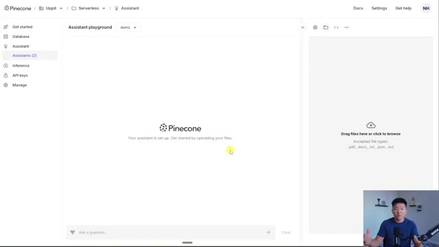
🔍 AgrandirEt je vais simplement les importer tout de suite dans notre Pinecone Assistant. Et maintenant qu'ils sont téléchargés dans Pinecone Assistant, je peux coller exactement la même question que j'ai posée à notre agent NN dans cette démo. Vous pouvez donc voir qu'il renvoie les bonnes réponses, et nous pouvons survoler chacun de ces liens puisque nous sommes en mode terrain de jeu pour voir de quel PDF il les a tirés, puis les numéros de page d'où il a tiré cette information.
Interface & Outils : Pinecone Assistant (interface web)
Contenu textuel & Code : Fichiers PDF importés (Nike.pdf, TSLA.pdf, Nvidia.pdf) et barre de saisie de question en bas avec une requête visible.
Action / Démonstration : Importation des fichiers PDF et test des requêtes dans l'assistant Pinecone.
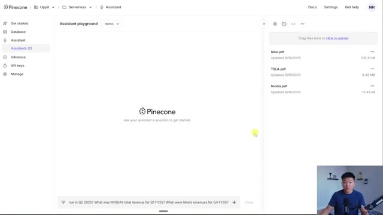
🔍 AgrandirDonc la puissance de ceci provient de l'API réelle que nous pouvons utiliser pour parler à cet assistant Pinecone. Et comme je l'ai dit, ne vous inquiétez pas si cela semble confus. Je vais vous montrer exactement ce que nous devons faire, et c'est en fait super facile. Donc vous pouvez voir qu'via l'API, il y a deux choses que nous pouvons faire. Nous pouvons télécharger des fichiers ou nous pouvons discuter avec notre assistant. Et dans la vidéo d'aujourd'hui, nous allons simplement nous concentrer sur la discussion avec notre assistant parce que nous avons déjà téléchargé nos fichiers dans cette interface juste ici.
Interface & Outils : Interface web Pinecone (Assistant playground)
Contenu textuel & Code : Exemples de code cURL pour l'upload de fichiers et pour chatter avec l'assistant, ainsi qu'un historique de conversation (ex: questions sur les revenus de Tesla, Nvidia, Nike).
Action / Démonstration : Présentation de l'API Pinecone et de ses exemples de code d'intégration.
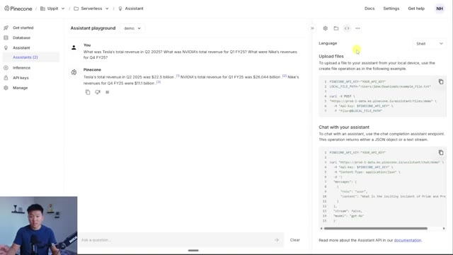
🔍 AgrandirDonc je vais retourner dans N8N et on va juste rapidement prendre un agent IA. Et maintenant, nous allons pouvoir le connecter à cet outil Pinecone Assistant. Donc quand nous donnons un outil à notre agent, vous pouvez voir qu'il n'y a pas d'outil natif ici pour un Pinecone Assistant, mais il y en a un pour Pinecone Vector Store. Donc ce que nous devons faire, c'est prendre une requête HTTP pour pouvoir parler à notre assistant.
Interface & Outils : n8n (interface web de gestion de workflows d'automatisation)
Contenu textuel & Code : Workflow contenant les blocs 'When chat message received' relié à un bloc 'AI Agent' avec ses connecteurs Chat Model, Memory et Tool.
Action / Démonstration : Le présentateur explique comment intégrer et connecter l'agent IA dans l'éditeur de workflows n8n.
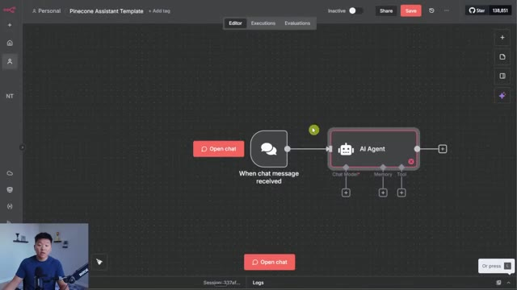
🔍 AgrandirDonc tout ce que vous allez faire, c'est de retourner dans Pinecone ici. Vous allez ouvrir cette petite chose de connexion pour accéder à l'API. Et puis ici en bas, où vous voyez "discuter avec votre assistant", je vais fondamentalement tout copier, à l'exception des deux lignes du haut pour la clé API Pinecone et cette ligne vide. Je vais donc copier ceci, y retourner et modifier, cliquer sur "importer cURL", puis coller cela là-dedans.
Interface & Outils : Interface web de Pinecone (Assistant Playground).
Contenu textuel & Code : Commandes cURL pour l'API Pinecone, requêtes POST JSON pour l'assistant avec messages et modèles de langage (GPT-4o).
Action / Démonstration : Sélection et copie du code cURL pour interagir avec l'assistant Pinecone via l'API.
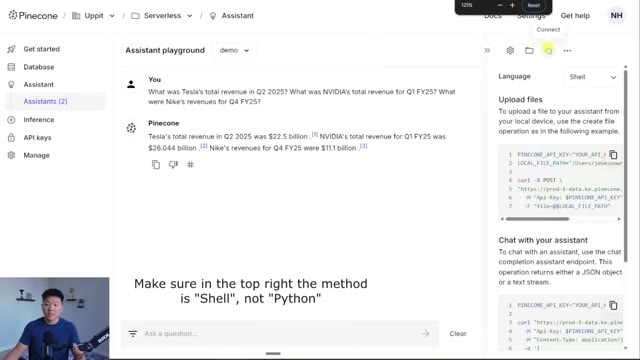
🔍 Agrandir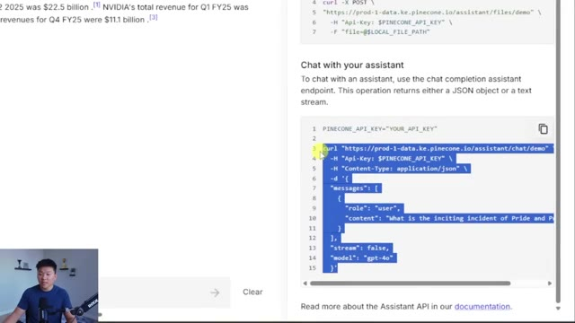
🔍 AgrandirEt quand je clique sur importer, cela remplit pratiquement toute la requête HTTP dont nous avons besoin, à l'exception de quelques éléments que nous devrons ajuster. Donc, la première chose est une clé API Pinecone. La façon d'obtenir cela est de retourner dans Pinecone, vous cliquerez ici sur les clés API, et ensuite vous allez simplement créer une nouvelle clé. Donc, voici à quoi cela ressemble, vous cliquez sur créer une clé API. Je vais juste appeler celle-ci "demo 4", nous allons créer cette clé et maintenant elle va nous donner la valeur secrète et je dois copier ceci et après l'avoir sauvegardée et avoir cliqué sur fermer, elle va disparaître. Vous pouvez toujours en créer une nouvelle, mais gardez simplement à l'esprit que cette clé aura disparu. Donc ensuite, vous revenez dans Pinecone et vous collez simplement cette clé directement là-dedans et vous serez tout bon.
Interface & Outils : n8n / outil d'automatisation de workflow et tableau de bord Pinecone.
Contenu textuel & Code : Paramètres de requête HTTP avec en-tête 'Api-Key' et formulaire de génération de clé API Pinecone.
Action / Démonstration : Configuration des identifiants et génération d'une nouvelle clé API pour connecter le flux à Pinecone.
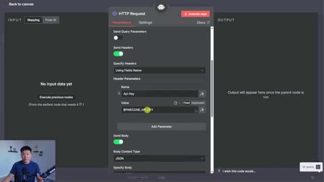
🔍 Agrandir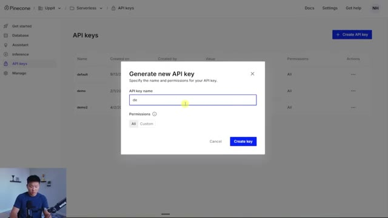
🔍 AgrandirDonc c'est super simple et une astuce de pro que je veux vous montrer les gars, c'est que si vous êtes déjà connecté à Pinecone via un nœud natif, vous pouvez venir dans l'authentification, vous pouvez aller dans prédéfini, et ensuite vous pouvez venir ici et taper simplement Pinecone et cela récupérera vos identifiants de votre intégration Pinecone native, donc vous pouvez soit faire ça, soit faire ceci. C'est exactement la même chose. Donc parce que je fais ça, je vais juste désactiver mes en-têtes, mais ne laissez pas cela vous confondre, tout ce que c'est, c'est essentiellement juste entrer notre mot de passe afin que nous puissions accéder à cet assistant Pinecone. Donc maintenant ce que je vais faire, c'est changer la description et je vais juste dire d'utiliser cet outil pour parler à votre base de connaissances. Donc nous allons coller cela comme description.
Interface & Outils : Interface de workflow d'automatisation (type n8n) avec une fenêtre modale de configuration de nœud HTTP Request.
Contenu textuel & Code : Paramètres HTTP (Method: POST, URL: https://prod-1-data.ke.pinecone.io/assistant/chat/demo, Authentication: Predefined Credential Type, Header Parameters: Api-Key).
Action / Démonstration : Sélection du type d'authentification prédéfini pour se connecter à Pinecone via le nœud HTTP Request.
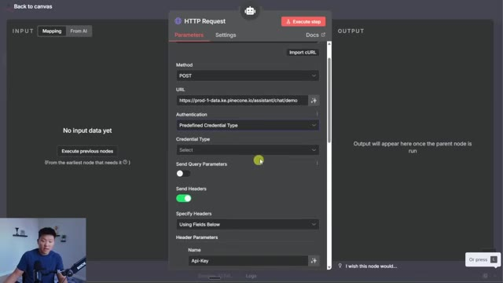
🔍 AgrandirJe vais nommer cet outil Pinecone juste pour garder les choses simples. Et ensuite, la dernière chose que nous devons configurer est la requête réelle que nous faisons à notre assistant Pinecone. Donc pour l'instant, si nous déclenchions cet outil, peu importe ce pour quoi nous demandions de l'aide à notre assistant, il enverrait cette requête à l'assistant. Quel est l'incident déclencheur de Orgueil et Préjugés ? Et donc nous ne voulons pas que ce soit la requête à chaque fois. Donc ce que nous devons faire, c'est changer ceci en une expression, ce qui signifie que ces valeurs peuvent être dynamiques. Je vais me débarrasser de ce contenu ici, et je vais taper deux accolades tournées dans chaque sens. Nous allons faire un
Interface & Outils : Interface web d'automatisation de workflow (style n8n ou plateforme similaire)
Contenu textuel & Code : Objet JSON avec un tableau "messages" incluant une question sur le livre "Pride and Prejudice", le paramètre "stream: false" et le modèle "gpt-4o".
Action / Démonstration : Configuration des paramètres et de la requête JSON pour l'outil Pinecone au sein du workflow.
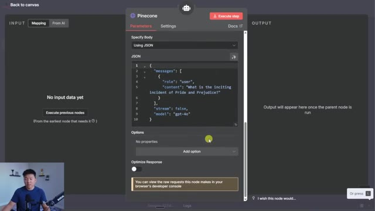
🔍 Agrandirsigne dollar, et nous allons récupérer ceci depuis la fonction IA. Et ceci va simplement permettre à notre agent IA de déterminer quelle requête est-ce que j'envoie à l'Assistant Pinecone. Et donc tout ce que je vais faire, c'est taper "search query" à l'intérieur de cette petite guillemet juste là. Et maintenant, c'est fondamentalement configuré pour être dynamique. Et je vais vous montrer exactement ce que je veux dire par là, si cela n'a pas encore de sens. Super. Donc maintenant, tout ce qui reste à faire, c'est de tester l'agent. Bien sûr, nous devons d'abord lui donner un cerveau. Donc je vais juste aller récupérer ma clé API OpenRouter, et nous allons simplement nous en tenir à GPT-4o mini pour l'instant. Très bien. Donc maintenant, l'agent est fondamentalement configuré. Tout ce qui va
Interface & Outils : n8n (éditeur de workflow low-code)
Contenu textuel & Code : Expression JSON contenant `{{ $fromAI() }}` configurée pour un modèle gpt-4o.
Action / Démonstration : Configuration d'un paramètre `$fromAI` pour l'agent IA au sein du workflow n8n.
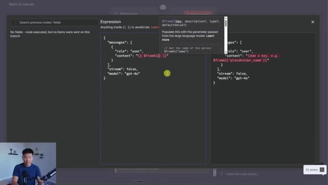
🔍 Agrandiril ne reste plus qu'à le tester, à ajuster le prompt système et à continuer à faire quelques tests. C'est donc exactement ce que nous allons faire en premier. Je vais insérer cette requête concernant le document Tesla. Combien de véhicules Tesla a-t-il livrés au deuxième trimestre 2025 ? Et comment cela se compare-t-il au même trimestre en 2024. Encore une fois, ce qui se passe, c'est que cela interroge notre assistant Pinecone, et ensuite, il va nous renvoyer quelques réponses. Vous pouvez donc voir qu'il indique que Tesla a livré un total de 384 000 véhicules, et il nous donne ensuite une ventilation des différents modèles qu'il a réellement livrés. Et il a également indiqué qu'il y avait eu une baisse de 13 % des livraisons totales d'une année sur l'autre.
Interface & Outils : Interface web de workflow (type n8n) avec panneau de chat intégré et logs d'exécution en temps réel.
Contenu textuel & Code : Question dans le chat : "How many vehicles did Tesla deliver in Q2 2025, and how did that compare to the same quarter in 2024?". Workflow avec "When chat message received", "AI Agent", "OpenRouter Chat Model", et "Pinecone".
Action / Démonstration : Exécution du workflow et test de la requête sur Tesla dans l'assistant de chat.
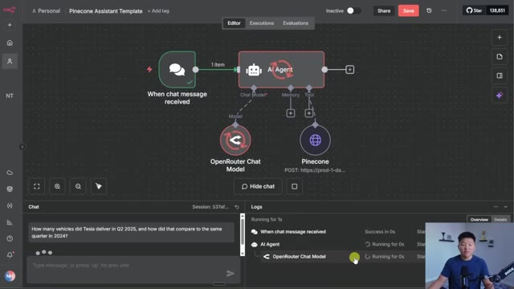
🔍 Agrandirje viens juste de vérifier tout ça. C'est correct. Maintenant, gardez à l'esprit qu'il n'y a pas de prompt système dans cet agent IA, ce qui explique pourquoi nous n'obtenons aucune information de source, comme le PDF d'où il provient et les numéros de page où il a été trouvé. Donc, ce que je vais faire très rapidement, c'est lui donner un prompt système juste ici, qui est ce qui définit le comportement de notre agent IA. Je vais donc ouvrir ceci en plein écran et je vais simplement coller ce prompt que j'utilisais tout à l'heure.
Interface & Outils : n8n (éditeur de workflows d'automatisation IA)
Contenu textuel & Code : Workflow d'agent IA connecté à Pinecone et OpenRouter, avec les paramètres du nœud AI Agent affichant le champ System Message.
Action / Démonstration : Navigation et configuration des paramètres du nœud de l'agent IA pour inspecter le message système.
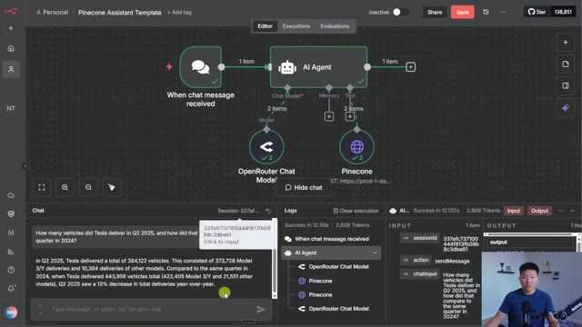
🔍 Agrandir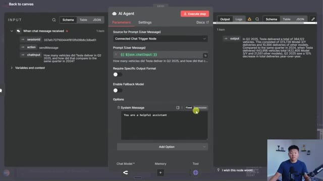
🔍 AgrandirC'est vraiment, vraiment simple. J'ai dit, tu es un agent IA spécialisé dans l'analyse de données de rapports de bénéfices. Utilise ton outil Pinecone pour faire des recherches dans les rapports de bénéfices de Tesla, Nike et NVIDIA. En répondant à la question de l'utilisateur, cite toujours tes sources en indiquant de quel document tu l'as tiré, de quelle page, de quelle section, ainsi qu'une citation textuelle exacte provenant de la source originale.
Interface & Outils : Interface web d'automatisation (n8n), panneau de configuration de nœud avec volet d'expression et aperçu des résultats.
Contenu textuel & Code : Texte du prompt configuré pour l'agent IA : "# Overview\nYou are an AI agent specialized in analyzing earnings report data.\nUse your Pinecone tool to search through earnings reports from Tesla, Nike, and Nvidia.\nWhen answering the user's question, always cite your sources as far as: what document you got it from, what page it was from, what section, and an exact text based quote from the original source" ainsi que les variables d'entrée (sessionId, action, chatInput).
Action / Démonstration : Visualisation et explication de la configuration du prompt système de l'agent IA dans l'éditeur de flux de travail.
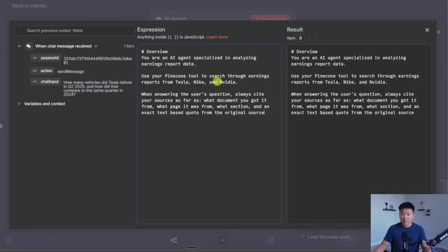
🔍 AgrandirParce que lorsque nous faisons du RAG et de la recherche vectorielle, il est vraiment important de voir d'où notre agent a tiré l'information afin que nous puissions lui faire confiance. C'est donc simplement un excellent exemple de la définition du comportement de l'agent. Car ce qui est intéressant, c'est que vous remarquerez que lorsqu'il a cherché dans l'outil Pinecone, nous obtenions réellement cette information. Si je devais faire défiler vers le bas par ici, vous pourriez voir que ce que nous récupérions de Pinecone, ce sont les pages exactes d'où il a tiré cette information, ainsi que le nom du PDF d'où il l'a trouvée.
Interface & Outils : n8n (éditeur de workflow d'automatisation)
Contenu textuel & Code : Un prompt définissant le comportement d'un agent IA spécialisé dans l'analyse de rapports financiers (exigeant de citer les sources, documents, pages et citations exactes).
Action / Démonstration : Visualisation et configuration du prompt système de l'agent d'automatisation.
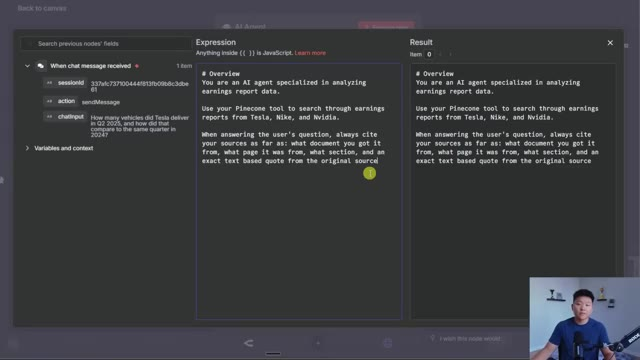
🔍 AgrandirL'agent IA ne savait tout simplement pas comment nous communiquer réellement cette information. Très rapidement, les gars, excusez l'éclairage. Je suis assis ici en train d'éditer cette vidéo de nuit et je me suis rendu compte que je n'avais pas montré ce que je voulais dire par le fait que l'agent remplissait la requête ici en bas tout seul. Donc si vous vous souvenez, cette question que nous avons posée était : combien de véhicules Tesla a-t-il livrés au deuxième trimestre 2025 et comment cela se comparait-il au même trimestre en 2024 ?
Interface & Outils : n8n (éditeur de workflow low-code pour l'automatisation par IA)
Contenu textuel & Code : Diagramme de nœuds, configuration JSON avec corps de requête et variables dynamiques, données de test affichant une question sur les livraisons de Tesla.
Action / Démonstration : Navigation et explication de la configuration d'un agent IA et de ses nœuds de données dans n8n.
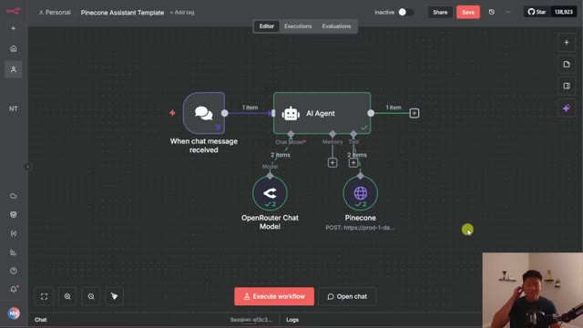
🔍 Agrandir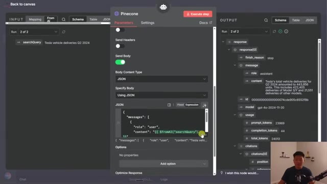
🔍 Agrandir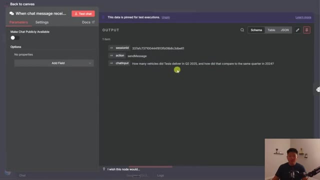
🔍 AgrandirDonc, ce qui s'est passé ici, c'est qu'on peut voir que l'agent a appelé l'outil Pinecone deux fois. On peut voir qu'il y avait deux éléments. Et si on clique dessus, on peut voir les deux recherches différentes qu'il a faites auprès de notre assistant Pinecone. En haut à gauche, si on va sur l'exécution numéro un sur deux, il a cherché dans l'assistant Pinecone « Tesla Vehicle Delivers Q2 2025 ». Et ensuite, il a su qu'il devait comparer cela à 2024. Alors il a fait une nouvelle recherche. Et il a dit « Tesla Vehicle Deliveries Q2 2024 ». Et donc cette requête de recherche est la variable que nous avons ici en bas, parce que l'agent décide fondamentalement quelle sera ma requête de recherche ?
Interface & Outils : Interface web de plateforme d'automatisation IA / workflow (type Flowise ou équivalent).
Contenu textuel & Code : Paramètres de l'outil Pinecone (URL, méthode POST, authentification) avec le champ searchQuery indiquant 'Tesla vehicle deliveries Q2 2024' et la réponse JSON de l'assistant.
Action / Démonstration : Visualisation et inspection des détails d'un appel d'outil Pinecone suite à son exécution par l'agent.
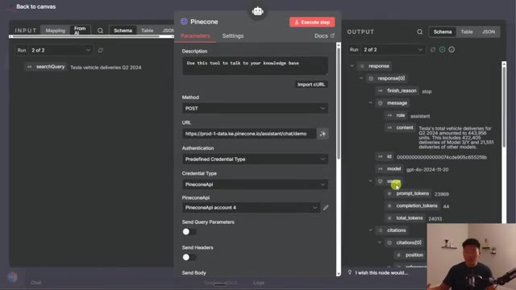
🔍 AgrandirEt combien de fois dois-je faire une requête de recherche ? Et c'est pourquoi sur ce côté droit, nous avons aussi deux exécutions distinctes et deux résultats distincts. Donc pour tous les exemples futurs, gardez simplement cela à l'esprit. L'agent décide de la requête de recherche, et c'est ainsi qu'il parvient à obtenir les bonnes informations à chaque fois. Encore une fois, excusez l'éclairage. Je travaille pour obtenir un éclairage professionnel ici derrière. Comme ça, si je m'enregistre dans le noir, je n'aurai pas l'air terrifiant comme ça.
Interface & Outils : Interface web de workflow et d'automatisation de type nœuds (Pinecone Assistant Template).
Contenu textuel & Code : Schéma d'agent IA connectant un module "When chat message received" à un "AI Agent", relié à "OpenRouter Chat Model" et "Pinecone".
Action / Démonstration : Présentation et explication du fonctionnement des exécutions multiples et de la structure d'un agent IA avec ses outils de recherche.
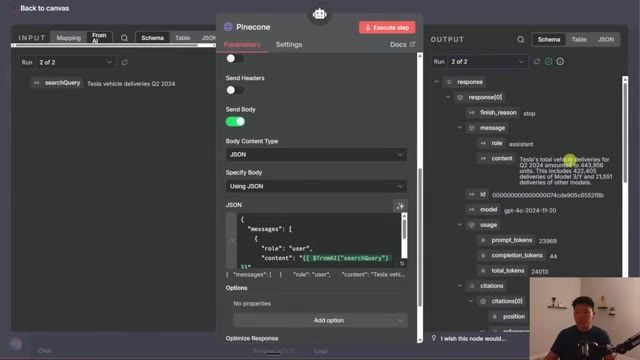
🔍 Agrandir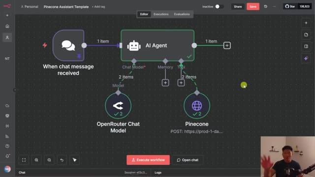
🔍 AgrandirRevenons à la vidéo. Donc, juste pour vous montrer que ce prompt a fonctionné, je vais republier exactement le même message. Et ce qu'on va voir, c'est que ça nous donne la bonne réponse une fois de plus, mais cette fois, il y aura le nom d'un PDF et des pages. Donc voilà. On a eu la même réponse et cette fois, on a notre source de Tesla Q2 et on a nos numéros de page ici en bas. Mais ce que vous remarquez peut-être maintenant, c'est qu'on n'obtient pas la citation textuelle du PDF. Et la raison pour laquelle ce n'est pas le cas, c'est parce que ce qui se passe dans ce nœud Pinecone, et je ne vais pas essayer d'entrer trop dans les détails techniques ici, mais l'assistant Pinecone sur ce serveur
Interface & Outils : Interface web de Pinecone Assistant Template (style n8n ou plateforme de workflow d'IA)
Contenu textuel & Code : Schéma de workflow connectant "When chat message received" à un "AI Agent", relié à OpenRouter Chat Model et Pinecone. Dans le chat, une question sur les livraisons de Tesla en Q2 2025 est affichée.
Action / Démonstration : Exécution d'un message de chat testant l'agent IA, avec les logs montrant l'appel en cours à Pinecone.
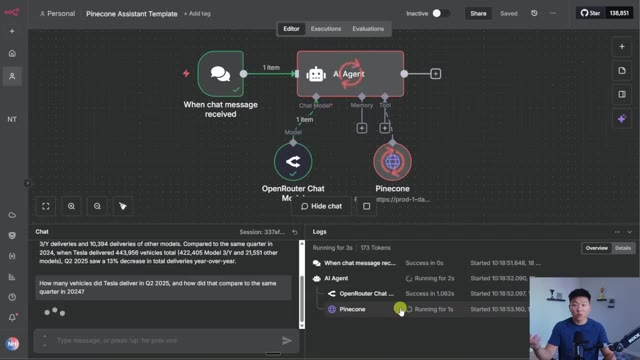
🔍 AgrandirIl effectue des recherches dans la base de connaissances et nous donne ensuite pour ainsi dire un bref résumé avec la bonne réponse. Ceci n'est pas une citation exacte basée sur du texte, mais c'est ce que notre agent IA NNN utilise pour nous donner une réponse. Et pour souligner ce point, je vais vous montrer un meilleur exemple de cela. Je demande quels ont été les revenus de Nike pour le quatrième trimestre de l'exercice fiscal 2025 et comment ils se comparent à ceux de l'année dernière ?
Interface & Outils : Interface web d'automatisation de workflow (style n8n ou plateforme similaire).
Contenu textuel & Code : Configuration du connecteur Pinecone, structure JSON de sortie (réponse de l'assistant sur les livraisons Tesla) et prompt de chat sur Nike.
Action / Démonstration : Exécution d'une étape de test d'API pour interroger la base de connaissances Pinecone et affichage des résultats.
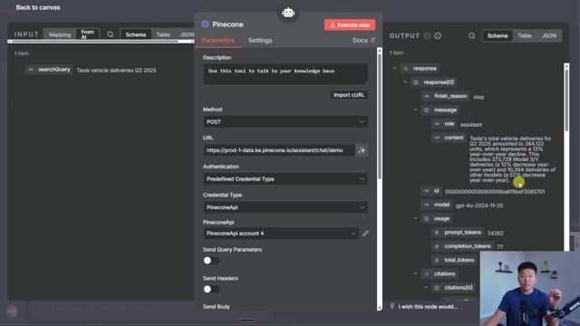
🔍 Agrandir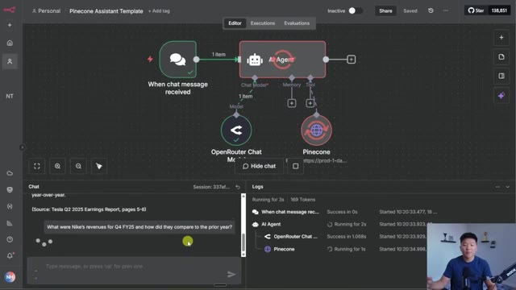
🔍 AgrandirEt ce que vous allez voir se produire, c'est que cela nous donne la bonne réponse, mais maintenant cela nous donne la citation exacte, ce qui est faux. Donc si je devais copier cette citation et aller dans le document Nike, qui était celui-ci. Et si je colle ceci dedans, nous n'obtenons aucun résultat. Nous obtenons zéro correspondance. Et c'est parce que, encore une fois, ce qui se passe, c'est que le contenu de Pinecone qui revient est un résumé. C'est la réponse de l'assistant Pinecone qu'il a générée à partir du texte exact. Donc la façon dont nous corrigeons cela, c'est que nous devons comprendre le type de requête que nous faisons à l'assistant Pinecone. Et pour ce faire,
Interface & Outils : Pinecone Assistant (plateforme de workflow), Visionneuse PDF (Navigateur web).
Contenu textuel & Code : Prompts de requête sur les revenus de Nike pour le T4 FY25, logs d'exécution de l'agent, structure JSON avec les champs "message", "content" et "citations".
Action / Démonstration : Démonstration du processus de débogage : l'utilisateur vérifie la cohérence d'une citation fournie par l'IA en la comparant manuellement avec le document source PDF officiel de Nike.
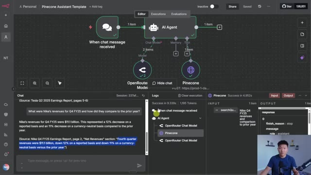
🔍 Agrandir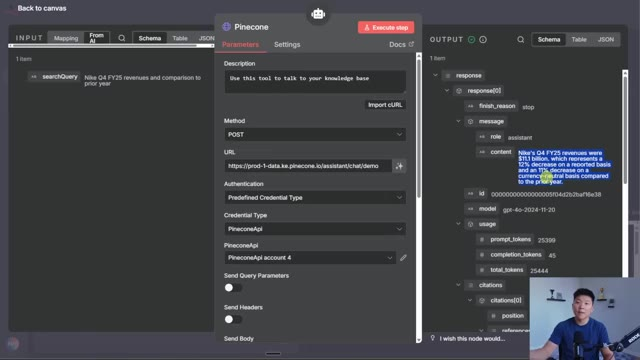
🔍 Agrandirnous devons regarder la documentation de l'API, que je vais faire glisser ici. C'est donc essentiellement la documentation qui nous indique comment utiliser l'Assistant via l'API. Nous pouvons voir des choses comme la réponse en streaming, l'extraction du contenu de la réponse, le choix d'un modèle, tout ce genre de choses. Mais ce qui m'intéresse, c'est cette section du bas qui dit inclure les surbbrillances de citation dans la réponse.
Interface & Outils : Navigateur web affichant la documentation de Pinecone.
Contenu textuel & Code : Documentation technique avec des exemples de code cURL, Python et JavaScript pour interagir avec l'Assistant Pinecone, incluant les paramètres de messages et de température.
Action / Démonstration : Le présentateur commente la structure de la documentation d'API et les paramètres disponibles comme la température d'échantillonnage et la réponse en streaming.
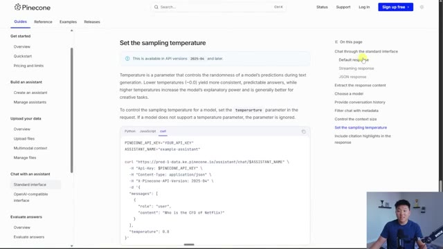
🔍 AgrandirDonc, tout ce que nous avons à faire pour obtenir une citation exacte, c'est d'ajouter cette chose ici en bas qui dit « include highlights ». C'est essentiellement juste un petit levier sur lequel nous pouvons tirer pour modifier le fonctionnement de l'Assistant. Alors gardez en tête la façon dont cette citation n'a pas fonctionné. Je vais aller dans la requête HTTP et tout ce que je vais faire, c'est ajouter cette petite section « include highlights equals true ». Et maintenant, je vais enregistrer ceci et poser exactement la même question. Donc nous posons exactement la même question. La réponse va revenir correcte à nouveau parce que l'assistant Pinecone va être plutôt bon pour donner la bonne réponse.
Interface & Outils : Documentation web Pinecone, éditeur de workflow visuel type n8n / Flowise.
Contenu textuel & Code : Requête cURL avec paramètre d'API « include_highlights: true » et structure JSON pour l'Assistant Pinecone.
Action / Démonstration : Explication et configuration des paramètres de l'API Pinecone pour inclure les citations et surbrillances dans les réponses de l'assistant IA.
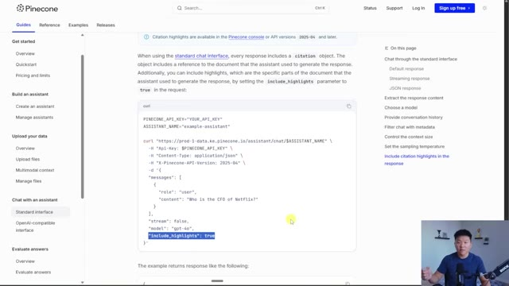
🔍 Agrandir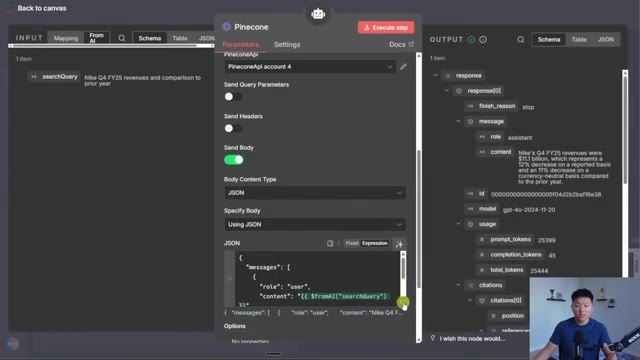
🔍 Agrandir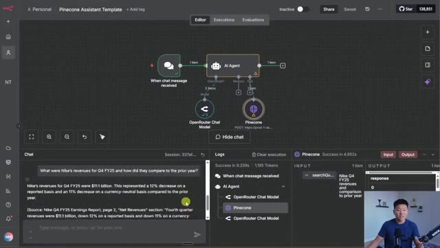
🔍 AgrandirMais maintenant, nous allons voir qu'une citation exacte ressort également. Donc, juste ici, on obtient cette citation exacte. Je vais copier ça, retourner dans le document Nike. Et maintenant, si je colle ça, on peut voir qu'il extrait la citation exacte. Et la raison pour laquelle il a pu faire ça, c'est parce que dans Pinecone, encore une fois, cette section appelée « content » n'est pas la citation exacte. Mais si je fais défiler tout en bas, vous pouvez voir qu'on a une nouvelle section qui a été ajoutée, appelée « content ». Et c'est en fait ce qui va extraire exactement ce qui a été trouvé dans le document. C'est donc un très bon exemple non seulement de pouvoir comprendre ce qui se passe, mais aussi de pouvoir comprendre que si je veux changer
Interface & Outils : Visionneuse PDF, interface Pinecone (tableau de bord d'assistant IA).
Contenu textuel & Code : Document financier Nike, requêtes de recherche et réponses JSON structurées avec citations.
Action / Démonstration : Copie et collage d'une citation exacte extraite du document financier via l'assistant Pinecone.
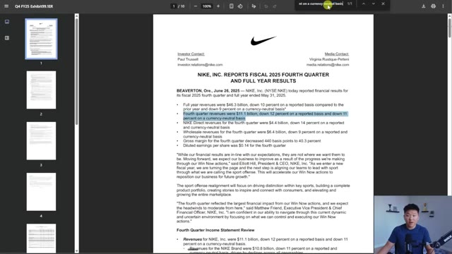
🔍 Agrandir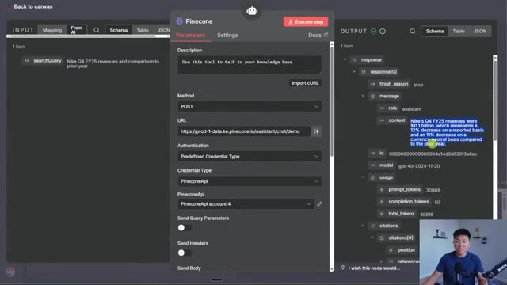
🔍 Agrandir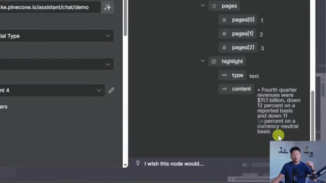
🔍 Agrandirle comportement, je peux aller parcourir la documentation de l'API. Et c'est ainsi que je peux aussi modifier des éléments comme la température d'échantillonnage, ou je peux changer le modèle. Parce qu'une chose que vous remarquerez, c'est que si vous êtes dans votre playground d'assistant juste ici et que vous changez le modèle de chat avec lequel interagir, vous pouvez voir que j'ai changé le modèle. Si je survole ceci, il est écrit : sélectionnez le modèle à utiliser par l'assistant dans cette conversation.
Interface & Outils : Navigateur web affichant la documentation Pinecone.
Contenu textuel & Code : Documentation technique avec extraits de code cURL et JSON illustrant l'utilisation du paramètre "temperature".
Action / Démonstration : Consultation de la documentation de l'API Pinecone pour configurer les paramètres du modèle.
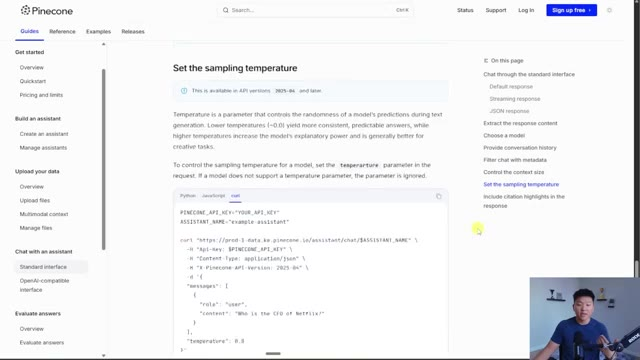
🔍 AgrandirPour persister ce choix dans votre application, rappelez-vous que vous devez définir votre modèle dans vos appels API. Donc, en retournant sur NNN dans la requête HTTP, ici en bas, nous avons un modèle. Et donc, si je voulais changer le modèle que nous utilisons pour interagir du côté de l'assistant Pinecone, nous devrions le modifier ici même. Très bien. Désolé si je suis entré un peu dans les détails techniques. Je pense simplement qu'il est vraiment important que vous compreniez comment cela fonctionne réellement. Si vous cherchez à comprendre un peu mieux tout cela, j'ai une vidéo sur l'API que vous pouvez regarder. Je vais la taguer juste ici en haut.
Interface & Outils : Interface web de type n8n ou plateforme d'automatisation similaire.
Contenu textuel & Code : Nœuds de workflow : "When chat message received", "AI Agent", "OpenRouter Chat Model", et "Pinecone", avec les logs d'exécution et une interface de chat interactive.
Action / Démonstration : Le présentateur explique la configuration des modèles dans les appels API du workflow en montrant les différents nœuds connectés à l'agent IA.
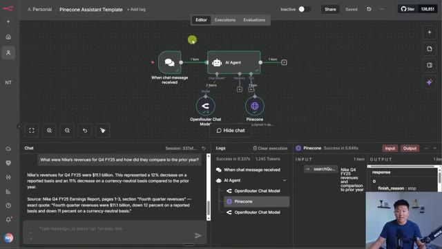
🔍 AgrandirOu vous pouvez également consulter ma communauté Plus. Le lien pour celle-ci se trouve dans la description. C'est là que vous recevrez un accompagnement plus structuré et que vous trouverez une communauté de personnes qui construisent chaque jour. Quoi qu'il en soit, très rapidement maintenant, je veux vous montrer la différence, car je suis sûr que vous vous demandez pourquoi je n'utiliserais pas simplement une base de vecteurs Pinecone ou une base de vecteurs Supabase ? Pourquoi est-ce plus rapide, plus facile et peut-être même meilleur ? Donc, la raison pour laquelle je suis un grand fan de ça en ce moment, c'est parce que ce qui se passe ici, c'est que Pinecone, en arrière-plan, gère toute l'indexation, l'incorporation, le découpage. Il gère tout cela afin de vous faciliter la tâche pour que vous n'ayez pas à tout gérer pour récupérer vos sources précises. Parce que comme je l'ai dit, si
Interface & Outils : Interface web de Pinecone Assistant / Flowise (ou outil similaire de workflow d'agents IA)
Contenu textuel & Code : Diagramme de workflow avec des nœuds connectés (Pinecone Assistant, Pinecone Vector, Supabase Vector, OpenRouter Chat Model) et une zone de chat en bas.
Action / Démonstration : Visualisation et configuration d'un workflow d'automatisation IA avec plusieurs modèles et bases de données vectorielles.
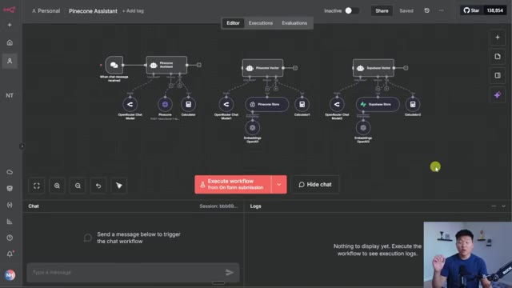
🔍 Agrandirsi vous adoptez l'approche vectorielle classique, il y a beaucoup plus de travail en amont. Vous ne pouvez pas simplement déposer un fichier et être prêt à démarrer. Vous devez configurer un pipeline pour inclure un filtrage des métadonnées et peut-être même différents types de découpage et de segmentation. Je ne vais pas entrer dans les détails à ce sujet pour l'instant, car je ne veux pas que la vidéo soit trop longue, mais je veux vous montrer une comparaison très rapide. Ainsi, ces trois agents ont exactement le même prompt et les mêmes documents, à la différence qu'ils sont simplement stockés différemment.
Interface & Outils : Interface web de gestion de flux de travail / Pinecone Assistant.
Contenu textuel & Code : Nœuds de workflow représentant Pinecone Assistant, Pinecone Vector, Supabase Vector, OpenRouter Chat Model, et Pinecone/Supabase Store avec des embeddings OpenAI.
Action / Démonstration : Présentation et configuration visuelle d'un pipeline vectoriel avec des nœuds connectés.
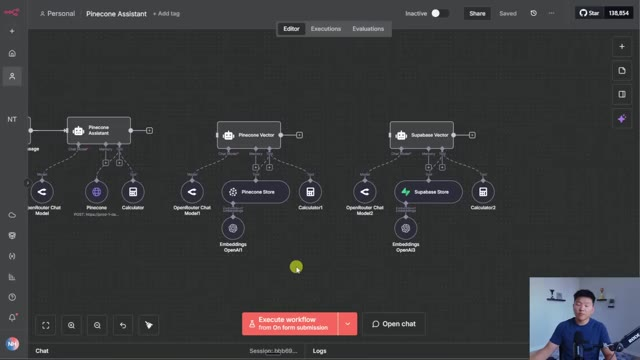
🔍 AgrandirDonc, je vais poser cette question dès maintenant à notre assistant Pinecone qui demande : quelle était la marge opérationnelle de Tesla au deuxième trimestre 2025 ? Vous verrez donc qu'il répond que la marge opérationnelle était de 4,1 %, ce qui est correct. Vous pouvez voir qu'il nous donne le document, il nous donne les numéros de page ainsi qu'une citation exacte. Et gardez également à l'esprit que nous avons obtenu cette réponse. Juste ici, il est écrit 1 277 jetons. Gardez donc ce chiffre en tête. Maintenant, si nous passons à cet agent du milieu qui utilise un magasin de vecteurs Pinecone plutôt que l'assistant, nous allons poser exactement la même question. Et rappelez-vous que nous cherchons la réponse 4,1 %. Donc, ce que nous obtenons en retour
Interface & Outils : Interface web d'un outil de workflow et d'assistant IA (type Make/n8n ou interface personnalisée Pinecone).
Contenu textuel & Code : Workflow avec les nœuds "When chat message received", "Pinecone Assistant", "OpenRouter Chat Model", "Pinecone", et "Calculator". Dans le chat : "What was Tesla's operating margin in Q2 2025 ?" et la réponse "Tesla's operating margin in Q2 2025 was 4.1%." avec les sources.
Action / Démonstration : Exécution d'un workflow interactif pour interroger l'assistant sur les données financières de Tesla.
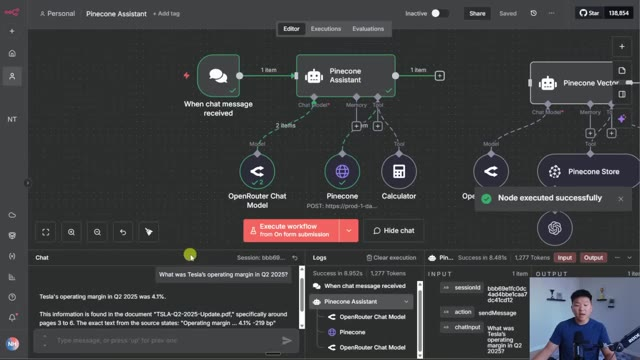
🔍 Agrandirc’est que je ne sais pas vraiment quelle est la réponse. Et vous pouvez voir que cela a pris près de 30 000 jetons. Nous avons donc obtenu une réponse incorrecte et cela nous a coûté environ 15 fois plus, plus de 15 fois plus. Oui, c'était un calcul horrible, mais vous voyez l'idée. Et comme nous avons adopté une approche classique par morceaux vectoriels où nous étions en charge de tout le prétraitement de ces morceaux, je suppose que cela fera exactement la même chose lorsque nous essaierons cela avec notre base de données vectorielle Supabase. Vous pouvez donc voir ici à peu près la même réponse. Il n'a pas été capable de trouver le chiffre exact. Nous recherchions 4,1 % et celui-ci n'a pris que 5 000 jetons.
Interface & Outils : Interface web de Pinecone Assistant / Outil de workflow visuel
Contenu textuel & Code : Diagramme de flux de travail d'automatisation IA comprenant des modules de chat, de vectorisation et de calcul, ainsi que les logs d'exécution indiquant 29,459 jetons et une sortie textuelle sur la marge opérationnelle de Tesla.
Action / Démonstration : Visualisation des résultats d'exécution d'un workflow d'assistant IA montrant les coûts en jetons et la réponse textuelle générée.
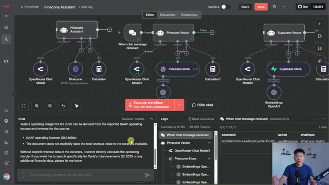
🔍 Agrandirce qui est encore environ trois fois plus cher que l'assistant Pinecone. C'est donc tout ce dont je vais parler aujourd'hui. Je ne dis pas que l'assistant Pinecone est toujours la meilleure option, car vous avez aussi ce coût de fonctionnement de cinq cents par heure. Mais ce que je veux dire, c'est que si vous voulez mettre quelque chose en place rapidement et voir comment cela fonctionne, cet assistant Pinecone change la donne, surtout si vous êtes débutant et que vous voulez expérimenter avec des trucs comme des agents RAG. Et je voulais aussi saluer rapidement la légende, Mark Kashoff.
Interface & Outils : Interface web d'automatisation de workflow (semblable à Flowise ou Langflow)
Contenu textuel & Code : Blocs fonctionnels : "When chat message received", "Pinecone Assistant", "Pinecone Vector", "Supabase Vector", reliés à des modèles de chat (OpenRouter), des stockages (Pinecone Store, Supabase Store), et des outils (Calculator, Embeddings).
Action / Démonstration : Visualisation et configuration d'un diagramme de workflow d'intelligence artificielle avec le curseur de la souris positionné sur le modèle OpenRouter Chat.
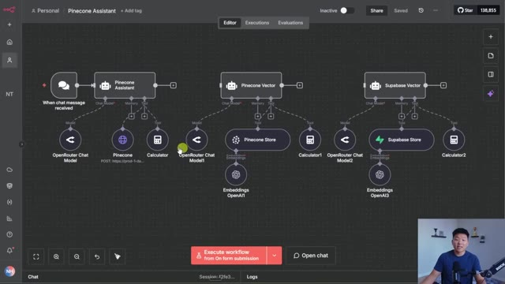
🔍 AgrandirC'est lui qui m'a fait découvrir ces assistants Pinecone. Et comme je l'ai dit, je trouve ça super cool. J'espère donc que vous comprenez maintenant comment vous pouvez tester l'assistant Pinecone par vous-même. Et si vous voulez télécharger ce modèle pour pouvoir vous amuser un peu avec les différences, vous pouvez l'obtenir gratuitement en rejoignant ma communauté School gratuite. Et si vous aimez voir ce genre de choses et que vous voulez un apprentissage un peu plus structuré, alors allez absolument jeter un œil à ma communauté Plus. Le lien pour cela se trouve également dans la description. Nous avons une super communauté de plus de 2 500 membres. Tout le monde, chaque jour, construit et gagne sa vie avec N8N. Et nous avons une section de cours complète avec trois cours complets. Agent Zero est les bases pour les débutants. De 10 heures à 10 secondes plonge dans N8N. Et puis notre nouveau cours sur l'agence IA unipersonnelle est disponible pour nos
Interface & Outils : Interface web de workflow et plateforme communautaire Skool (AI Automation Society Plus).
Contenu textuel & Code : Nœuds de workflow : "Pinecone Assistant", "Pinecone Vector", "Supabase Vector", "OpenRouter Chat Model", "Pinecone Store", "Supabase Store" et "Calculator".
Action / Démonstration : Visualisation d'un schéma d'automatisation d'IA et navigation dans la plateforme de cours de la communauté.
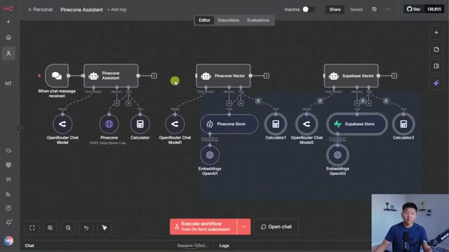
🔍 Agrandirmembres annuels. Et cela explique comment poser les bases pour créer une entreprise d'automatisation IA. Donc j'adorerais vous voir dans ces communautés, mais ce sera tout pour cette vidéo. J'espère que vous avez apprécié. Si vous avez appris quelque chose de nouveau, n'hésitez pas à laisser un j'aime. Ça m'aide vraiment énormément. Et comme toujours, j'apprécie que vous soyez allés jusqu'à la fin de la vidéo. On se retrouve tous dans la prochaine. Merci les gars.
Interface & Outils : Navigateur web, plateforme communautaire en ligne, éditeur de flux d'automatisation visuel.
Contenu textuel & Code : Modules de cours sur l'automatisation IA et diagramme de workflow intégrant des bases de données vectorielles (Pinecone, Supabase) et des modèles de langage. [DESC_IMAGE_1] Présentation des ressources de la communauté et des modules de formation pour créer une agence d'automatisation IA. [DESC_IMAGE_2] Visualisation d'un workflow complexe connectant des assistants IA et des outils de calcul.
Action / Démonstration : Explications face caméra et démonstration conceptuelle.